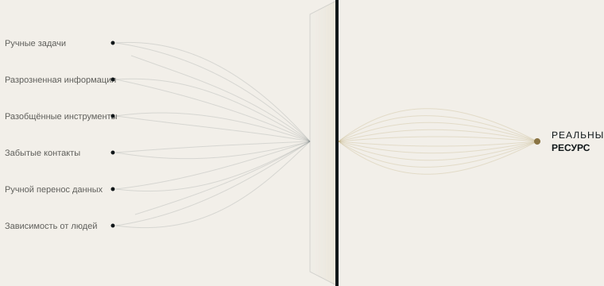

Автоматизация
Превращаем повторяющиеся задачи в автоматические процессы по правилам, которые определяем вместе с вами.
АВТОМАТИЗАЦИЯ РЕСУРСОВ
Большинству компаний не нужны новые инструменты. Им нужно понять, куда уходят их время, информация и внимание.
SKURX SYSTEMS находит, где теряется ресурс, и превращает его в более понятные, связанные и эффективные рабочие системы.
ЧТО МЫ ДЕЛАЕМ
Мы находим, где ваша компания теряет ресурс, и высвобождаем его с помощью автоматизации, связанных инструментов и искусственного интеллекта там, где это оправдано.

НАШИ УСЛУГИ
Превращаем повторяющиеся задачи в автоматические процессы по правилам, которые определяем вместе с вами.
Для того, что не решить правилом: ИИ усиливает вашу команду, а не заменяет её.
Связываем ваши инструменты, чтобы информация переходила из одного в другой без чьего-либо участия.
КАК МЫ РАБОТАЕМ
Мы исходим не из технологии, а из вопроса: где ваша компания теряет ресурс и почему?
Изучаем вашу компанию изнутри: смотрим, как ваша команда работает каждый день.
Находим, где теряются время, информация или потенциальные клиенты, и почему.
Говорим, что мы бы изменили, а что трогать не стоит.
Запускаем, проверяем вместе с вами и настраиваем, пока всё не заработает так, как нужно вашей команде.
ПЕРВЫЙ ШАГ
За неделю мы разбираемся, как работает ваша компания, и передаём вам понятную карту: что отнимает ресурс, что можно автоматизировать и в каком порядке. Отчёт остаётся у вас, что бы вы ни решили.
Каждый процесс описан простым языком.
Учётные записи, инструменты и данные принадлежат вам.
Вы видите, что и когда сделала каждая автоматизация.
Если мы перестанем работать вместе, всё останется вашим.
ПРИМЕРЫ ПО ОТРАСЛЯМ
Иллюстративные сценарии на основе типичных ситуаций. Мы работаем с компаниями любых отраслей по всей Испании.
Всё продолжает работать, даже когда в офисе уже никого нет.